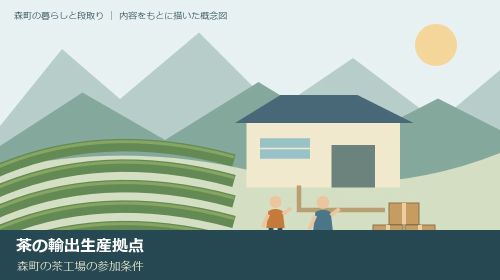
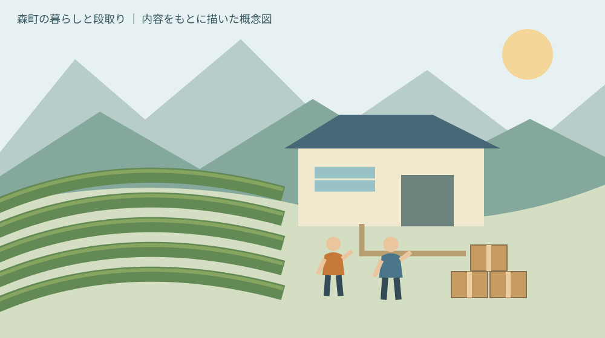
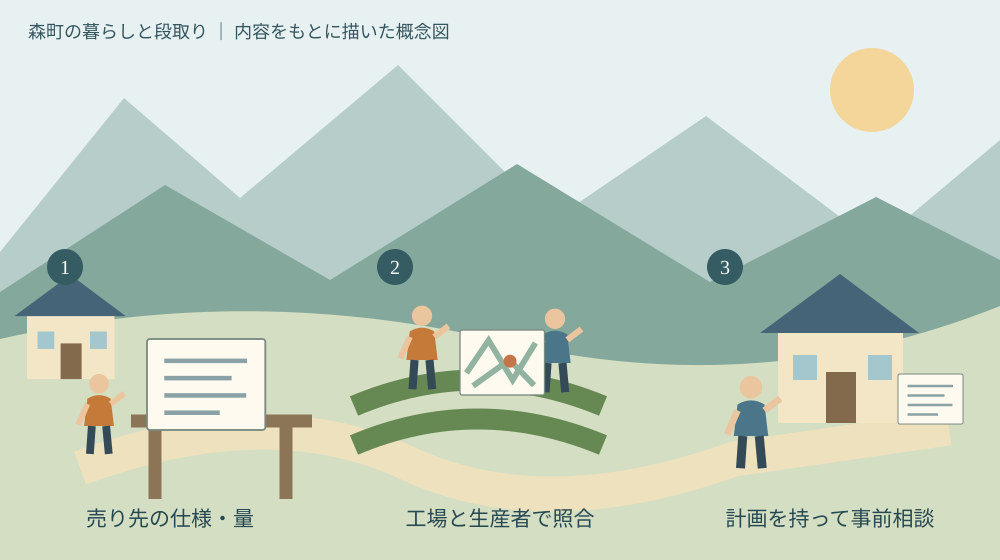

茶の輸出生産拠点｜森町の茶工場の参加条件
／ 農地・山林・茶畑

Q. 森町の茶工場が参加するには何が必要？
A. 静岡県の輸出生産拠点は、売り先と連携し必要な茶葉量を生産者へ示す茶工場が中心です。取引又は取引予定、10年以上の継続予定、技術指導体制などが要件。5年間の拠点化計画を作り、2027年3月31日までの随時受付に向け、管轄農林事務所へ事前相談します。
茶園と工場を支える人が、参加前に確かめたいこと
森町の茶づくりは、茶園の手入れだけでは続きません。生葉を摘む人、工場へ運ぶ人、加工する人、売り先と話す人が、それぞれの予定を合わせています。新しい販路を考えるときにも、すでに積み重ねている仕事と費用を、最初からないものにはできません。
大石浩之（磐田市／不動産業）です。静岡県が募集する茶の「輸出生産拠点」について、森町の茶工場や生葉生産者が参加条件を確かめる順番を整理します。輸出を勧めること自体が目的ではありません。売り先、必要量、継続する体制を同じ紙で考えるための記事です。
この記事の確認日は2026年10月8日です。静岡県の募集ページは同年8月5日更新で、募集は7月31日に始まっています。更新日と受付開始日を同じ日として扱わないでください。年度内随時受付の期間は、2027年3月31日までと案内されています。
茶園そのものを引き継いで迷っている場合は、先に茶園を続けるための条件整理が役立ちます。本記事では、輸出用の茶を生産する工場と生葉生産者の連携に焦点を当てます。土地を持っているだけで、応募条件を満たす制度ではありません。
公式条件｜拠点化計画は、売り先と必要量をつなぐもの
静岡県の募集案内では、拠点化計画の作成者は茶工場の代表者等、参画者は輸出向け茶葉を生産する生葉生産者です。工場の代表者が流通販売業者等と連携し、輸出需要に応じた茶葉の必要量を県内の生産者へ明確にする計画と説明されています。
工場の要件には、輸出実績がある流通販売業者か海外実需者との取引、又は取引予定が含まれます。新規に一定量の荒茶を販売し、生葉を仕入れられることも要件です。県の案内本文に、どの工場にも共通する一律の数量基準が示されているとは読めません。自社の量を持って相談します。
今後10年以上、継続的に輸出向け茶生産へ取り組む予定であることも工場の要件です。単年度の試験販売だけを想定した募集とは異なります。計画に参画する生産者への技術指導体制も必要です。売り先を見つける担当と、栽培の相談に応じる担当の両方が問われます。
計画には、輸出向け茶園の拡大目標を設定します。茶園、生葉仕入量、荒茶出荷量、荒茶販売額を拡大する5年間の計画と、施設・設備の導入計画も必要です。数量だけでなく販売額が並ぶため、私は工場と生産者が価格の前提を話すきっかけになると受け止めています。
10年以上の継続予定と、5年間の計画は違う時間軸です。私は、この違いが見落とされやすいと感じます。5年分の数字を書けば継続体制の検討も終わるわけではありません。担当者が交代した場合や設備更新の時期も含め、誰が事業をつなぐのかを別に考える必要があります。
改植と提出先｜条件がかかる場面を狭く正確に読む
静岡県の計画要件は、参画した茶生産者が改植を行う場合に「やぶきた」以外の品種を選ぶとしています。参加するなら直ちに全茶園を改植する、という条件ではありません。改植する場合の条件と、今ある茶園をどう使うかの判断を分けて読みます。
私は、品種の選択を名前だけで決めるべきではないと考えます。売り先が求める茶の仕様、工場の加工方法、茶園の状態を合わせて話す必要があるためです。この記事では特定の品種や改植時期を推奨しません。技術面は、工場と所管の相談先へ具体的に確認してください。
計画の提出先は、管轄の農林事務所です。県は、要件や記載内容について提出前に相談することを勧めています。募集ページには中遠農林事務所企画経営課の電話0538-37-2285が掲載されています。森町の工場から相談する際は、所在地と計画内容を伝えて担当を確かめます。
募集期限が年度末でも、相談を年度末まで待つ理由にはなりません。私は、申請書を完成させてから初めて連絡するより、売り先と数量の仮案を持つ段階で相談したいと思います。計画として不足する項目が分かれば、生産者との打合せで聞く内容を絞れるからです。

森町で考える意味｜販路の歴史と、これからの担い手
森町の図説森町史「24 森町の産業」は、茶や木材などが町に集まった歴史を紹介しています。茶は幕末の横浜開港後に主要な輸出品となり、横浜へ送られたと記されています。輸出と森町の茶の関わりは、2026年度の募集から始まった話ではありません。
私は、この歴史を新しい取引の成功保証には使いたくありません。当時の販路と、現在の買い手が求める仕様は別だからです。ただ、茶を作る仕事と届ける仕事をつなぐ必要がある点は、今回の計画を考える手掛かりになります。工場だけで数量を決めない理由もそこにあります。
森町が公表する「農業経営基盤強化促進法に基づく地域計画」は、農地1筆ごとの10年後の耕作者を示す目標地図を位置づけています。茶の輸出生産拠点の募集とは別の仕組みです。それでも、今後誰が茶園を使うかという確認は、工場の長期計画を考える際の土台になります。
地域計画に名前や土地が載ることと、輸出向け生産への参加が決まることは同じではありません。私は、農地の利用見通しと、工場の仕入れ計画を混ぜずに並べたいと考えます。借りている茶園なら、利用できる期間や持ち主との合意を先に確かめる相談ができます。
価格から続け方を考える視点は、森町の茶を続ける価格と負担の記事にも整理しています。輸出向けという言葉だけで、手間が増えても吸収できるとは限りません。どの条件なら続けられるかを、工場と生産者の両側から見る必要があります。
良い点｜生産者へ必要量を明確にする仕組み
静岡県の輸出生産拠点は、販売先との連携を前提として必要な茶葉量を生産者へ示す仕組みです。私は、設備を導入する話より先に、誰にどのくらい売るかを話せる点を評価します。生産者が何を目標に茶園を管理するのか、具体的な問いを持てるからです。
工場と生産者の役割が書かれている点も利点です。私は、輸出という大きな言葉だけでは、誰が買い手の条件を確認するのか見えにくいと感じます。工場の代表者が売り先とつなぎ、生産者への技術指導体制を用意する形なら、質問の行き先を決めやすくなります。
5年間で茶園、仕入量、出荷量、販売額を見ることにも意味があります。私は、一度の販売額だけで計画を良し悪し判断しないための枠だと考えます。栽培面積を増やす年と、出荷量が増える年が同じとは限りません。数字のつながりを話し合う場を持てます。
提出前の相談を県が勧めている点も、私は使いやすい入口だと受け止めます。小さな工場では、計画を作る時間も日々の仕事と競合します。必要な項目を早めに確かめれば、調べ直しを減らせます。担当者へ見せる材料は、確定と仮置きを区別しておけばよいと考えます。
注文したい点｜数量目標だけでは家計も工場も続かない
輸出生産拠点の要件を満たすことと、工場や生産者の手元に利益が残ることは別です。私は、応募を考える方にその違いを明確にしてほしいと思います。県の募集案内から、森町の特定工場の増益額や買い手の買取価格を確定することはできません。
私が確認したいのは、価格の決め方、必要な検査や記録、規格に合わない茶葉の扱いです。これらを県の一律の追加要件として述べているわけではありません。実際に売り先と契約や生産条件を相談する際、費用と責任を把握するための私の提案です。
10年以上の継続を支えるには、工場だけでなく生産者側の働き方にも目を向ける必要があります。私は、後継者がいるかという一問で終わらせたくありません。繁忙期に誰が作業できるか、指導を誰が受けるか、記録を誰が残すかまで見ないと、担当者の負担が隠れます。
募集本文だけでは分からない条件を、申請者がそれぞれ探し回る手間もあります。私は、事前相談で不足項目が分かる案内を望みます。その一方で、工場側も「輸出したい」だけで相談を終えず、売り先から聞いた仕様を一枚にまとめる。今日できる準備は、そこです。
対案・結論｜仕様・量・期間を一枚にして話す
森町の茶工場が輸出生産拠点を検討する第一歩は、売り先へ必要な茶葉の仕様と量を確認することです。私なら、紙の左に買い手の条件、中央に工場の加工と出荷、右に生産者の茶園と作業を書きます。最初は空欄があって構いません。足りない情報がどこか分かれば相談できます。
仕様の欄では、買い手の説明を自分の言葉に直した部分と、原文の条件を分けて保存します。聞き間違いや解釈違いを後で確認できるためです。専門用語が分からないまま、工場から生産者へ伝言するのは避けたいと私は考えます。曖昧な点は質問として残します。
量の欄では、生葉と荒茶を同じ数量として扱わないようにします。どの工程の量なのか、どの期間の数字なのかを明記します。私は、換算の根拠がない数字を埋めるより、工場の実績や相談先で確かめられるまで未確定と記す方が、計画を修正しやすいと考えます。
期間の欄では、5年間の計画と10年以上の継続予定を分けます。設備の導入時期、担当の交代、茶園の利用見通しを並べ、途中で変わる可能性がある点を見つけます。ここで将来を断言する必要はありません。変わったときに誰と相談するかが見えることを目指します。
生産管理の記録を考える際は、茶園の病害虫情報と防除記録の見方も参考になります。過去の予報を今の園地へ当てはめるのではなく、発表時点と自分の茶園の観察を分ける考え方です。輸出先に応じた条件は、改めて売り先や専門の相談先へ確認します。

家族と工場に残す記録｜担当者が替わっても条件を追える形に
茶の輸出向け生産の準備では、計画書だけでなく条件が決まった経緯を残すと、後の確認に使えます。私は、販売先とのやり取りに確認日を付け、最新版がどれか分かる保存方法を勧めます。古い数量表を前提に生産者と話さないための、地味ですが具体的な手当てです。
生産者ごとの資料には、参加予定の茶園と作業できる範囲を記します。家族が手伝う予定でも、本人が了解していない時間を当然の戦力として数えない。私は、それが長く続ける計画の出発点だと考えます。手伝える時期と難しい時期を先に聞けば、仕入れの見通しも相談しやすくなります。
土地の所有者と耕作者が異なる茶園では、土地の資料と生産の資料を分けて保管します。輸出用の茶を作る計画があることだけで、土地を自由に使えるわけではありません。権利関係や契約の個別判断は関係窓口や専門家へ確認し、未整理の条件を計画上で隠さないことです。
私は、話合いの最後に「決まったこと」と「持ち帰ること」を分けた短い記録を残したいと思います。参加の返事を急いで集めるより、回答できない理由を知る方が役立つ場合があるからです。工場側の締切と、生産者が判断するために必要な時間の両方を表に置けます。
大石の視点｜輸出の看板より、現場が回る条件を見る
森町の茶に新しい売り先が生まれる可能性を、私は前向きに見ています。ただ、私は不動産業の立場から、茶園を使う人と工場を動かす人の予定がかみ合うかを先に考えます。これは茶工場の輸出相談を受けた実話ではなく、公式条件を読んだ私の意見です。計画の数字を現場の担当と作業へ置き換え、無理が隠れていないかを確かめたいと思います。
私にも迷いはあります。長期の取組を先に約束することが販路を育てるのか、販路の見通しをもう少し得てから体制を広げる方がよいのか。個々の工場の取引条件を見ずには決められません。だから、どの工場も輸出へ向かうべきだとは書きません。
言い切れるのは、応募要件を満たすだけでは経営判断は終わらない、ということです。売り先の仕様と必要量が分からなければ、生産者の負担を計画へ置けません。今日、取引先に一つ質問し、回答を一枚へ書き足す。それが森町の茶づくりを続けるための具体的な前進です。
よくある質問
この記事の条件と未確認事項を、質問ごとに整理します。手続きの前には出典の最新案内も確認してください。
生葉生産者だけで応募できますか
県の募集では、拠点化計画の作成者は茶工場の代表者等で、生葉生産者は計画の参画者です。生産者が単独で申し込める補助募集と同じではありません。輸出向け生産を考える生産者は、取引する工場と仕様や必要量を共有し、工場から管轄農林事務所へ事前相談する形を確認してください。土地の所有だけでは参加条件は決まりません。
すぐに全園を改植するのですか
県の条件は、計画に参画した生産者が改植をする場合に、やぶきた以外の品種を選ぶというものです。参加後すぐ全茶園を改植するという条件ではありません。現在の茶園の利用、売り先の仕様、工場の加工体制を整理し、改植の要否と時期は技術的な相談を含めて検討します。この記事では特定品種や改植時期を推奨しません。
選定されると利益が増えますか
選定されるだけで利益増加が保証されるとはいえません。県の募集条件と、各工場の仕入れ・販売条件は別です。買い手の仕様、数量、価格、検査や記録の負担を具体的に確かめる必要があります。森町の個別工場の収益増加額や、今回の検討先の選定状況は本記事では確認していません。応募前に費用と役割を整理してください。
出典・確認日
- 静岡県：茶の輸出拡大に向けた輸出生産拠点の募集（2026年10月確認／確認日：2026-10-08）
- 森町・図説森町史：24 森町の産業（2026年10月確認／確認日：2026-10-08）
- 森町：農業経営基盤強化促進法に基づく地域計画について（2026年10月確認／確認日：2026-10-08）
最終確認日：2026-10-08。制度・数値・受付条件は変わる場合があります。最新情報は発信主体へ確認してください。権利・登記・相続・農業技術や安全管理など、個別の判断は担当窓口や適切な専門家へご相談ください。